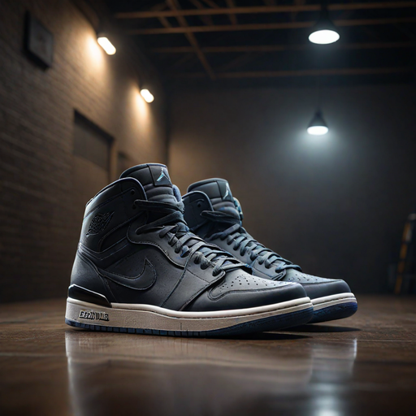

About Us
The Story Behind JCkix
I'm Justin Carfrey, and I've loved sneakers my entire life. Growing up, I was captivated by the style, culture, and history behind every pair, especially Jordans. This lifelong passion inspired me to create JCkix—a place where fellow sneaker enthusiasts can find the best selection of Jordans, both online and in person. I wanted to share my love for sneakers with others, offering a store that combines quality, authenticity, and top-notch service. JCkix isn't just a business; it's the realization of a dream and a tribute to the sneaker culture that shaped me.
